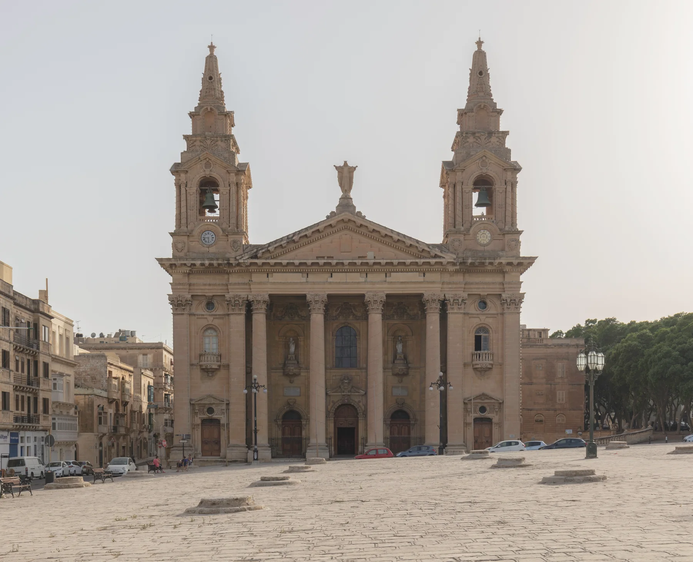

St Anne Street and the surrounding lived-in grid are their own setting, not a promise of a landmark view or a Valletta-centre address.

FLORIANA · MALTAGateway town.
Gateway town.
Four contexts.
Floriana sits outside Valletta's gate, but it is not shorthand for Valletta. Civic streets, the Granaries, garden and bastion edges, and Xatt Pinto each need an exact-address reading.
ONE LOCALITY, DISTINCT SETTINGS
Do not flatten Floriana into a single landmark.
The town's compact map contains very different daily settings. Use the locality as orientation, then test the real entrance, street, gradient and edge around a home.
The open square and parish-church setting are recognisable anchors. They do not prove current events, parking, access or quietness.
Argotti and the Msida Bastion Historic Garden orient this edge; exact entrances and gradients still need checking.
The waterfront and cruise-terminal edge is physically distinct. It must not be used to imply a harbour view or short walk for every address.
VIEWING REALITY
Walls, roads and gradients matter more than a straight line.
Floriana is compact, but bastions, arterial roads and garden walls can change the final route. Test the path you would actually repeat.
Begin at the real doorway
Check pavement, steps, crossings, deliveries and evening access at the building rather than at a locality-centre pin.
Walk to the useful stop
Use the exact stop, direction and date. A nearby-looking stop on a map may sit across a major road or on a different corridor.
Name the neighbouring place
Valletta, Pietà, Marsa and Ħamrun remain separate. An address near an edge should not inherit another locality's claims.
EVERYDAY ANCHORS
Three durable starting points, then a live check.
These official sources establish civic, health and transport context. Current hours, clinics, eligibility, stops, departures and disruptions stay on the live pages.
Floriana Local Council
The council publishes resident services, notices and maintenance information. Use the current site for office arrangements and collection details.
Open council services ↗Floriana Health Centre
Primary HealthCare locates the centre on Triq Frangisk Saver Fenech. Confirm present services, appointments and eligibility directly.
Open the current health-centre page ↗Floriani stops
The live network shows several Floriani stops across multiple corridors. Check the exact lettered stop, direction, date and diversion.
Plan with Malta Public Transport ↗ACTIVITIES WITH THEIR OWN ENTRANCES
Open square, botanic garden and historic garden are different visits.
Use each operator or custodian for present access. A heritage record is not a promise that a site is open, free, accessible or close to every Floriana home.
The Granaries
The Local Council records the historic grain-storage pits and large open urban space. Event use and conditions require a fresh check.
Argotti Botanic Gardens
The University's resource centre includes botanical collections, teaching and research. Verify current access, fees and events directly.
Msida Bastion Historic Garden
The Garden of Rest is a separate heritage visit in Floriana. Confirm opening and entry arrangements with its custodian.
FOOD WITHOUT A “BEST OF” CLAIM
Three register records, not three recommendations.
The Malta Tourism Authority's Floriana filter returned these records when checked. The register supports names and addresses only; confirm current trading, menu, price, accessibility and booking directly.
516 Bistro
A verifiable Floriana register entry, not an editorial ranking or property-specific walking claim.
Haywharf
The recorded address establishes locality context only. Check the venue's present offer and operating details directly.
Nan Yuan Cantonese Restaurant
The same rule applies: name and address are recorded; quality, cuisine, hours and availability are not inferred.
Open the locality context only when you need it.
The map is a broad OpenStreetMap view centred on Floriana. It deliberately marks no listing, council boundary, route, distance, journey time, ferry line, garden frontage or harbour-view guarantee and loads only after your click.
Floriana Local Council · Council services · Address Registrar · Primary HealthCare · Malta Public Transport · The Granaries · Argotti Botanic Gardens · Msida Bastion Historic Garden · MTA restaurant register. Volatile services, access, departures and operating details require a fresh check.
Private preview. No ranking, fixed opening hour, property pin, boundary, guaranteed view, parking claim, accessibility promise, route, distance or journey time is implied.